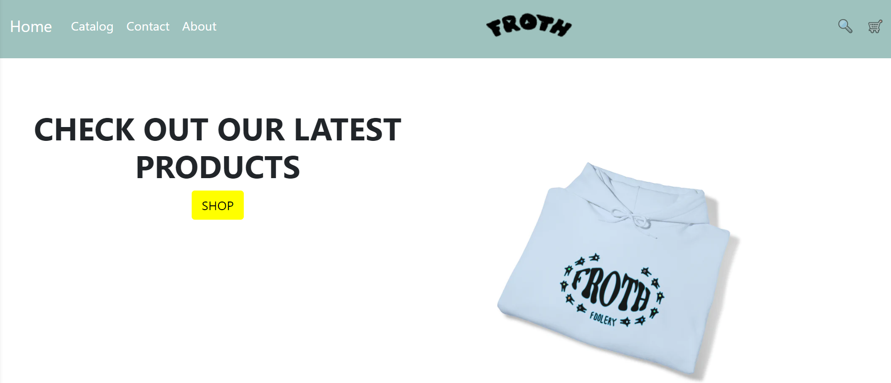

Web development has come a long way from the days of basic HTML and CSS files. Today, it’s an intricate field, complete with a multitude of tools, languages, and methodologies. Among these modern advances are UI frameworks such as Bootstrap 5 and Semantic UI, which offer a host of pre-designed elements and components. While some might argue that these frameworks add unnecessary complexity, the benefits they bring to the table can make the learning curve well worth it.
Initially, these UI frameworks may feel like a dense forest of classes and components. The task of understanding their inner workings can seem daunting. However, upon acclimating to their structure, these frameworks begin to resemble a helpful guide, leading you through the often convoluted journey of front-end development.
Speed is a vital consideration in any project, and this is where UI frameworks excel. They come pre-equipped with various elements like buttons, forms, and modals that would otherwise need to be coded from scratch. This allows developers to focus on more project-specific tasks, such as implementing business logic or other unique features. In other words, UI frameworks enable rapid development and prototyping, a major advantage from a software engineering perspective.
Uniformity and consistency are two more unsung virtues of UI frameworks. Large projects, particularly those developed by teams, can quickly become a hodgepodge of differing styles and components. UI frameworks help mitigate this by offering standardized elements that provide a cohesive user experience. This uniformity is not only pleasing to the eye but also reduces maintenance overhead in the long term.
Another critical aspect of contemporary web development is responsiveness. With the plethora of devices in use today, from desktops to smartphones, web applications must be designed to function seamlessly across various screen sizes. UI frameworks usually have built-in responsive design features, often saving developers the hassle of writing cumbersome and time-consuming media queries.
As for choosing between different frameworks like Bootstrap 5 and Semantic UI, each comes with its unique features and philosophies. Bootstrap 5 is known for its user-friendliness and quick setup, ideal for projects that have a tight deadline. Semantic UI offers greater customizability and uses semantic naming conventions, which make the code self-explanatory and easier to maintain—essential for larger, more complex projects.
However, it’s important to note that UI frameworks do have some drawbacks. They can be overwhelming for those new to the field, and because they come packed with numerous features, they can contribute to code bloat and slower page load times if not managed properly.
In summary, UI frameworks are far more than just ‘nice-to-haves.’ They offer numerous advantages, such as speed in development, consistency across projects, and ease in crafting responsive designs. Despite the initial investment in time and the potential for some complexity, these tools often prove invaluable in the long run. Therefore, the next time the decision to use a UI framework arises, it’s worth remembering that they are not merely optional but often essential tools in modern web development.